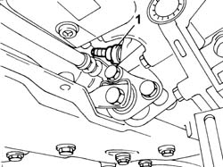
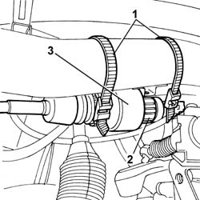

2180A20 ODOMETER CONTROL TRANSMISSION, TRANSMISSION SIDE LENGTH - INSPECTION AND REPLACEMENT IF REQUIRED
- Path
- Procedures > 21 GEARBOX UNIT > 2180 COMANDI SEGNALAZIONE VELOCITA > 2180A MILOMETER CONTROL > 2180A20 ODOMETER CONTROL TRANSMISSION, TRANSMISSION SIDE LENGTH - INSPECTION AND REPLACEMENT IF REQUIRED
- Kind
- repair procedure (removal / refitting; the operation number is the code)
- Applies to
- all engines; all production periods
- Interactive page
- https://sloeber94.github.io/elrnDB-fDct/en/#/244001045
Applies to: all engines; all production periods
 Removing
Removing
 Refitting
Refitting- Position the vehicle on the lift.
- Disconnect the negative battery terminal.
- Raise the vehicle.
1. Unscrew and disconnect the speedometer recorder

Applies to: all engines; all production periods
1. Open the retaining bands.
2. Undo the ring nut.
3. Remove the cable controlling the mileometer and tachograph.

Applies to: all engines; all production periods
Refitting
Removing- Fit the cable controlling the mileometer and tachograph.
- Connect the speedometer recorder to the differential and tighten
- Refit the retaining bands and tighten the locknut.
- Lower the vehicle.
- Connect the negative battery terminal.
- Remove the vehicle from the lift.